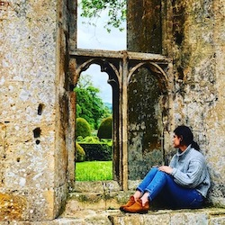

I visited this castle with my mom in 2019. We had always wanted to explore the Cotswolds in England, and this ended up being my favorite place there.
Read about the history of Sudeley Castle here.
In my opinion, this is the most lovely place to take a walk in Portland. Beautiful views and all the cute pups.
Learn more about the Rhododendron Garden here.